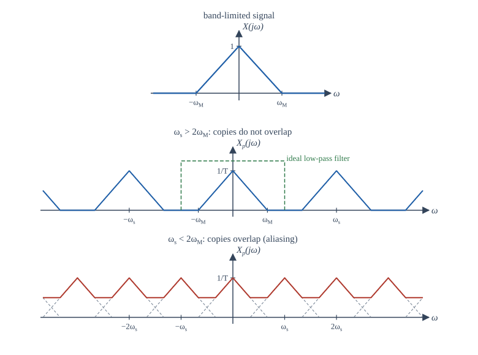
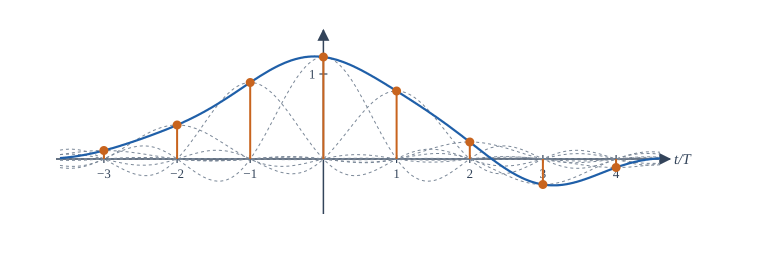
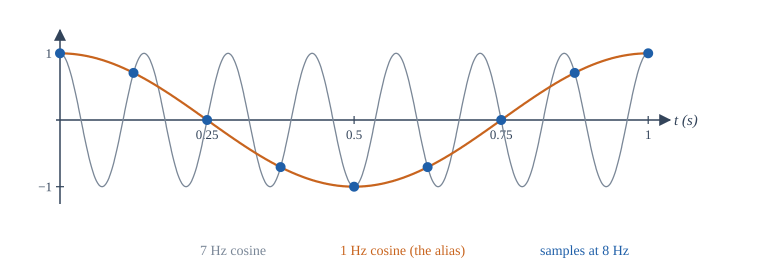
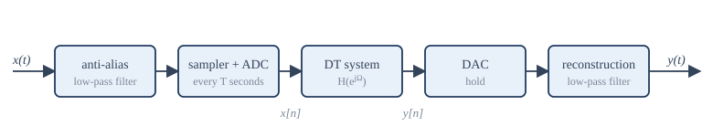

Chapter 9: Sampling and Aliasing¶
When samples capture everything, how to rebuild the signal, and what goes wrong when they do not
Learning outcomes
After this chapter you should be able to:
- model sampling as multiplication by an impulse train and derive the spectrum of the sampled signal;
- state and apply the sampling theorem, and compute the Nyquist rate of a band-limited signal;
- reconstruct a signal from its samples with the ideal low-pass filter and explain the sinc interpolation formula and the zero-order hold;
- predict the apparent frequency of an aliased tone and specify an anti-aliasing filter;
- relate the DTFT of the samples to the CTFT of the original, and find the effective frequency response of a digital system that processes analog signals;
- estimate the signal-to-noise ratio set by quantization.
9.1 The question¶
A continuous-time signal has a value at every instant; a sampled signal keeps only the values at \(t = nT\). Something must be lost, surely? The surprising answer is: not necessarily. If the signal contains no frequencies above a certain limit, and the samples are taken often enough, the samples determine the signal completely, and it can be rebuilt exactly. This fact, the sampling theorem, is what makes digital audio, digital video and digital communication possible. This chapter proves it with the tools of Chapters 6 and 7, and studies what happens when its conditions are broken.
Throughout, \(T\) is the sampling interval, \(f_s = 1/T\) the sampling rate in hertz, and \(\omega_s = 2\pi/T\) the sampling rate in radians per second.
9.2 Sampling as multiplication by an impulse train¶
To analyse sampling with the CT Fourier transform, we represent the samples by a CT signal: a train of impulses whose areas are the sample values.
so that, by the sampling property of the impulse,
This is called impulse-train sampling. It is an idealisation (no circuit produces impulses), but it carries exactly the information of the samples \(x(nT)\) and it lets us use the multiplication property of the Fourier transform.
The impulse train is periodic, and its transform (Table 6.1) is another impulse train:
Multiplication in time is convolution in frequency, divided by \(2\pi\), and convolving with a shifted impulse shifts. Therefore
The spectrum of the sampled signal is the original spectrum, scaled by \(1/T\), plus copies of it shifted to every multiple of the sampling frequency. Sampling in time has made the spectrum periodic, exactly as the duality of Section 7.6 predicted.
9.3 The sampling theorem¶
Suppose \(x(t)\) is band-limited: \(X(j\omega) = 0\) for \(|\omega| > \omega_M\). The copy centred at 0 occupies \([-\omega_M, \omega_M]\); the copy centred at \(\omega_s\) occupies \([\omega_s - \omega_M, \omega_s + \omega_M]\). They do not overlap provided \(\omega_M < \omega_s - \omega_M\), that is,
When the copies do not overlap (Figure 9.1, middle), the original spectrum sits untouched in the band \(|\omega| < \omega_s/2\), and it can be recovered by a low-pass filter. When they do overlap (Figure 9.1, bottom), the tails of neighbouring copies add onto the original, and no filter can separate them again.

The sampling theorem
Let \(x(t)\) be band-limited with \(X(j\omega) = 0\) for \(|\omega| > \omega_M\). Then \(x(t)\) is uniquely determined by its samples \(x(nT)\) if
The frequency \(2\omega_M\) (or \(2f_M\) in hertz) is the Nyquist rate; half the sampling rate, \(\omega_s/2\) (or \(f_s/2\)), is the Nyquist frequency.
The theorem is associated with the names of Nyquist, Shannon, Whittaker and Kotelnikov, who arrived at it, in various forms, in the first half of the twentieth century.
Example 9.1 Nyquist rates
(a) Speech for a telephone channel is filtered to about 3.4 kHz. The Nyquist rate is 6.8 kHz; telephone systems sample at 8 kHz, leaving room for a practical filter.
(b) Human hearing extends to roughly 20 kHz. The compact disc samples at 44.1 kHz, a little above the Nyquist rate of 40 kHz.
(c) \(x(t) = \cos(200\pi t) + 3\sin(500\pi t)\) contains 100 Hz and 250 Hz. The Nyquist rate is \(2 \times 250 = 500\) samples per second.
(d) \(x(t) = \cos^2(100\pi t) = \frac12 + \frac12\cos(200\pi t)\) contains 0 and 100 Hz, so the Nyquist rate is 200 samples per second, not 100. Multiplying signals widens their spectra, so check the highest frequency after expanding.
Sampling exactly at the Nyquist rate
The theorem needs \(\omega_s > 2\omega_M\), strictly. At exactly twice the frequency of a sinusoid, the samples may all fall on its zero crossings: \(\sin(2\pi f_0 t)\) sampled at \(2f_0\) gives \(\sin(\pi n) = 0\) for every \(n\). In practice one samples comfortably above the Nyquist rate.
9.4 Reconstruction¶
The ideal reconstruction filter¶
If the sampling theorem holds, pass \(x_p(t)\) through an ideal low-pass filter with gain \(T\) and cut-off \(\omega_c\) anywhere between \(\omega_M\) and \(\omega_s - \omega_M\), usually \(\omega_c = \omega_s/2\). The filter keeps the central copy, restores its height from \(1/T\) to 1, and removes all the others. The output is \(x(t)\) exactly.
The impulse response of this filter is (Example 6.5, with gain \(T\) and \(W = \omega_s/2 = \pi/T\))
Passing the impulse train through it replaces each impulse \(x(nT)\delta(t - nT)\) by a sinc pulse \(x(nT)\,\mathrm{sinc}((t - nT)/T)\). So
This is the sinc interpolation formula. Each sinc pulse equals 1 at its own sample instant and 0 at every other sample instant, so the sum passes through every sample; between samples, the pulses combine to fill in exactly the band-limited signal (Figure 9.2).

Practical reconstruction: the hold¶
The ideal filter is not causal, and the sinc pulses extend forever. A practical digital-to-analog converter (DAC) holds each sample value constant until the next one arrives, producing a staircase. This zero-order hold (ZOH) is a filter with impulse response \(h_0(t) = 1\) for \(0 \le t < T\) and 0 otherwise, whose frequency response is
It passes the central copy, but with a gentle droop (at \(\omega = \omega_s/2\) the gain has fallen to \(2/\pi\) of its DC value, about \(-3.9\) dB), and it only partly suppresses the copies at \(\pm\omega_s, \pm2\omega_s, \ldots\), which appear as the steps of the staircase. A smoothing reconstruction filter after the DAC removes the remaining copies, and the droop can be corrected digitally before the DAC. Sampling well above the Nyquist rate (oversampling) makes both tasks easier, because it leaves wide gaps between the copies.
9.5 Aliasing¶
When a signal is sampled too slowly, a frequency above the Nyquist frequency reappears in the samples as a lower frequency. The high frequency is said to take on an alias.
The simplest case shows it clearly. Sample \(\cos(2\pi\cdot7t)\) at \(f_s = 8\) Hz:
The samples are identical to those of a 1 Hz cosine (Figure 9.3). After sampling, nothing can tell them apart, and an ideal reconstruction filter (which keeps only frequencies below 4 Hz) produces the 1 Hz cosine.

In general, a tone at frequency \(f\) sampled at \(f_s\) is indistinguishable from tones at \(f + mf_s\) and \(-f + mf_s\) for every integer \(m\). The apparent frequency, the one in the range \(0 \le f_a \le f_s/2\) that reconstruction produces, is found by "folding": subtract the nearest multiple of \(f_s\) and take the absolute value,
Example 9.2 Apparent frequencies
With \(f_s = 8\) Hz: 7 Hz appears at 1 Hz; 9 Hz at 1 Hz; 12 Hz at 4 Hz; 25 Hz at 1 Hz (since \(25 - 3\cdot8 = 1\)). With \(f_s = 1000\) Hz, a 1400 Hz tone appears at 400 Hz, and a 1900 Hz tone at 100 Hz.
The phase may change too: a tone folded from just above \(f_s/2\) appears with its phase reversed, because the alias is at a negative frequency \(f - f_s\). For a real cosine that only flips the sign of the phase; for a sine it flips the sign of the whole signal.
Aliasing is familiar from films, where the spokes of a fast wheel seem to turn slowly or backwards: the camera samples the rotation 24 times a second, and the true rotation rate is folded into a slow apparent one. A stroboscope uses the same effect deliberately to "freeze" a rotating machine.
Anti-aliasing filters¶
Real signals are never perfectly band-limited: there is always some noise or some harmonic above the Nyquist frequency, and once sampled it folds down onto the wanted band, where it can never be removed. The only cure is prevention: an analog low-pass anti-aliasing filter before the sampler, which removes everything above \(f_s/2\) (or reduces it below the noise level) while the signal is still continuous. Figure 9.4 shows the complete chain for processing an analog signal digitally.

9.6 Discrete-time processing of continuous-time signals¶
The sampled sequence \(x[n] = x(nT)\) has a DTFT, and the impulse-train signal \(x_p(t)\) has a CTFT. They are the same function with the frequency axis relabelled: comparing \(X_p(j\omega) = \sum_n x(nT)e^{-j\omega nT}\) with \(X(e^{j\Omega}) = \sum_n x[n]e^{-j\Omega n}\) gives \(X(e^{j\Omega}) = X_p(j\Omega/T)\). Combined with the result of Section 9.2,
where \(X_c\) is the CTFT of the original. The continuous frequency \(\omega\) maps to \(\Omega = \omega T\), and the Nyquist frequency \(\omega_s/2 = \pi/T\) maps to \(\Omega = \pi\). The periodicity of the DTFT is the periodicity created by sampling.
Now suppose a band-limited signal, sampled above the Nyquist rate, is processed by a DT system \(H(e^{j\Omega})\) and then ideally reconstructed. The overall system from \(x(t)\) to \(y(t)\) behaves like a CT LTI system with frequency response
This is the justification for "digital filtering" of analog signals.
Example 9.3 A digital notch for mains hum
Audio sampled at 8 kHz is contaminated by 50 Hz hum. Which DT frequency must a notch filter remove?
\(\Omega_0 = 2\pi\cdot50/8000 = \pi/80 \approx 0.0393\) rad/sample. A filter with zeros at \(e^{\pm j\pi/80}\) on the unit circle does it; Chapter 12 shows how to place poles near those zeros to keep the notch narrow.
Changing the sampling rate¶
Two operations of Chapter 2 change the rate of a sequence directly.
- Decimation by \(M\) keeps every \(M\)th sample: the new rate is \(f_s/M\). In frequency, the spectrum is stretched by \(M\), and any content above \(\pi/M\) aliases. So the sequence must first be low-pass filtered to \(|\Omega| < \pi/M\).
- Interpolation by \(L\) inserts \(L - 1\) zeros between samples (expansion), which compresses the spectrum by \(L\) and creates \(L - 1\) unwanted images in each period (Section 7.3), and then removes them with a low-pass filter of cut-off \(\pi/L\) and gain \(L\).
Combining the two changes the rate by any rational factor \(L/M\): converting 44.1 kHz audio to 48 kHz uses \(L/M = 160/147\).
9.7 Quantization¶
An analog-to-digital converter also rounds each sample to one of a finite number of levels. With \(B\) bits, a full-scale range from \(-1\) to \(1\) is divided into \(2^B\) steps of size \(\Delta = 2/2^B\). The rounding error lies between \(-\Delta/2\) and \(\Delta/2\). For a busy signal it behaves like a random noise, uniformly distributed over that interval, with power
For a full-scale sinusoid (power \(\frac12\)), the signal-to-quantization-noise ratio is
Each extra bit adds about 6 dB. Sixteen-bit audio gives about 98 dB; eight bits give about 50 dB, which is audibly noisy. Signals below full scale give proportionally less: a signal 20 dB below full scale loses 20 dB of SNR.
9.8 Sampling experiments in NumPy¶
The program below demonstrates aliasing numerically, reconstructs a band-limited signal from samples with the sinc formula, and measures the SNR of quantized sine waves.
import numpy as np
# 1. Aliasing: a 7 Hz cosine sampled at 8 Hz gives the same samples as a 1 Hz cosine
fs = 8
n = np.arange(16)
x7 = np.cos(2 * np.pi * 7 * n / fs)
x1 = np.cos(2 * np.pi * 1 * n / fs)
print("samples identical:", np.allclose(x7, x1))
def alias(f, fs):
"""Apparent frequency (0 .. fs/2) of a tone at f Hz sampled at fs Hz."""
r = f % fs
return min(r, fs - r)
for f in (7, 9, 12, 25, 1000):
print(f"{f:5d} Hz sampled at {fs} Hz looks like {alias(f, fs):g} Hz")
# 2. Ideal (sinc) reconstruction of a band-limited signal from its samples
fs, T = 10.0, 0.1
nn = np.arange(-400, 401) # many samples, so truncation error is small
xs = np.cos(2 * np.pi * 1.3 * nn * T) + 0.5 * np.sin(2 * np.pi * 3.1 * nn * T)
t = np.linspace(-1, 1, 9)
xr = np.array([np.sum(xs * np.sinc((tk - nn * T) / T)) for tk in t])
xtrue = np.cos(2 * np.pi * 1.3 * t) + 0.5 * np.sin(2 * np.pi * 3.1 * t)
print("largest reconstruction error:", f"{np.max(np.abs(xr - xtrue)):.1e}")
# 3. Quantization noise: B-bit rounding of a full-scale sine
rng = np.random.default_rng(0)
s = np.sin(2 * np.pi * rng.random() + 2 * np.pi * 0.01234 * np.arange(200_000))
for B in (8, 12, 16):
step = 2 / 2 ** B # full scale is -1 .. 1
q = np.round(s / step) * step
snr = 10 * np.log10(np.mean(s ** 2) / np.mean((s - q) ** 2))
print(f"B = {B:2d}: measured SNR {snr:5.1f} dB, formula 6.02B + 1.76 = {6.02 * B + 1.76:5.1f} dB")
samples identical: True
7 Hz sampled at 8 Hz looks like 1 Hz
9 Hz sampled at 8 Hz looks like 1 Hz
12 Hz sampled at 8 Hz looks like 4 Hz
25 Hz sampled at 8 Hz looks like 1 Hz
1000 Hz sampled at 8 Hz looks like 0 Hz
largest reconstruction error: 6.0e-04
B = 8: measured SNR 50.0 dB, formula 6.02B + 1.76 = 49.9 dB
B = 12: measured SNR 74.0 dB, formula 6.02B + 1.76 = 74.0 dB
B = 16: measured SNR 98.1 dB, formula 6.02B + 1.76 = 98.1 dB
The 1000 Hz tone, an exact multiple of the 8 Hz sampling rate, is sampled at the same point of every cycle and looks like a constant (0 Hz). The reconstruction error of \(6\times10^{-4}\) comes only from using 801 samples instead of infinitely many; the sinc pulses decay slowly, so the sum must be long. The quantization measurements match \(6.02B + 1.76\) dB closely.
9.9 Summary¶
Summary
- Impulse-train sampling gives \(X_p(j\omega) = \frac1T\sum_k X(j(\omega - k\omega_s))\): copies of the spectrum at every multiple of \(\omega_s\).
- Sampling theorem: a signal band-limited to \(\omega_M\) is determined by samples taken at \(\omega_s > 2\omega_M\) (the Nyquist rate is \(2\omega_M\)).
- Ideal reconstruction uses a low-pass filter of gain \(T\) and cut-off \(\omega_s/2\), which amounts to the sinc interpolation formula \(x(t) = \sum x(nT)\,\mathrm{sinc}((t - nT)/T)\). Practical DACs use a zero-order hold followed by a smoothing filter.
- Undersampling folds a frequency \(f\) to \(|f - f_s\,\mathrm{round}(f/f_s)|\). An analog anti-aliasing filter before the sampler is the only cure.
- The DTFT of the samples is the periodised CTFT with \(\Omega = \omega T\). A DT system inside an ideal sampler and reconstructor acts as \(H(e^{j\omega T})\) for \(|\omega| < \pi/T\).
- Decimation needs a low-pass filter first; interpolation needs one afterwards.
- \(B\)-bit quantization of a full-scale sine gives an SNR of about \(6.02B + 1.76\) dB.
9.10 Exercises¶
Exercise 9.1
Find the Nyquist rate of \(x(t) = 4\cos(1000\pi t)\cos(3000\pi t)\).
Answer
The product is \(2\cos(2000\pi t) + 2\cos(4000\pi t)\): 1000 Hz and 2000 Hz. The Nyquist rate is 4000 samples per second.
Exercise 9.2
A 3 kHz tone is sampled at 5 kHz and ideally reconstructed. What frequency comes out?
Answer
2 kHz. \(|3 - 5| = 2\) kHz, which is below the Nyquist frequency of 2.5 kHz.
Exercise 9.3
The signal \(x(t) = \cos(2\pi\cdot 30t) + \cos(2\pi\cdot 70t)\) is sampled at 100 Hz. Write the sampled sequence and describe what reconstruction gives.
Answer
\(x[n] = \cos(0.6\pi n) + \cos(1.4\pi n)\), and \(\cos(1.4\pi n) = \cos(2\pi n - 0.6\pi n) = \cos(0.6\pi n)\). So \(x[n] = 2\cos(0.6\pi n)\), and reconstruction gives \(2\cos(2\pi\cdot30t)\): the 70 Hz tone has aliased onto the 30 Hz tone.
Exercise 9.4
A signal band-limited to 4 kHz is sampled at 10 kHz. Between which frequencies can the cut-off of the ideal reconstruction filter lie?
Answer
Between 4 kHz (the top of the signal band) and \(10 - 4 = 6\) kHz (the bottom of the first copy).
Exercise 9.5
At what sampling rate must an ECG with useful content up to 150 Hz be sampled, at minimum? Why do instruments use a higher rate?
Answer
Above 300 samples per second. Higher rates (500 or 1000 per second are common) leave room for a practical anti-aliasing filter with a gradual roll-off and capture sharp features more faithfully.
Exercise 9.6
A DT filter \(H(e^{j\Omega})\) is an ideal low-pass filter with cut-off \(\pi/4\). It is used between an ideal sampler and reconstructor at \(f_s = 16\) kHz. What is the cut-off of the equivalent analog filter?
Answer
\(\omega = \Omega/T\), so \(f = \frac{\pi/4}{2\pi}\cdot16\,\text{kHz} = 2\) kHz.
Exercise 9.7
How many bits are needed for a quantization SNR of at least 80 dB with a full-scale sinusoid?
Answer
\(6.02B + 1.76 \ge 80\) gives \(B \ge 13.0\), so 13 bits (\(6.02\times13 + 1.76 = 80.0\) dB); 14 bits for a margin.
Exercise 9.8
A sequence sampled at 48 kHz is to be decimated by 3. What must be done first, and what is the new rate?
Answer
Low-pass filter to \(|\Omega| < \pi/3\) (8 kHz in analog terms) to avoid aliasing, then keep every third sample. The new rate is 16 kHz.
Exercise 9.9
Show that the sinc interpolation formula returns \(x(mT)\) at \(t = mT\).
Answer
At \(t = mT\), \(\mathrm{sinc}((mT - nT)/T) = \mathrm{sinc}(m - n)\), which is 1 for \(n = m\) and 0 for every other integer. Only the term \(n = m\) survives.
Exercise 9.10
A wheel with 12 identical spokes turns at 2.5 revolutions per second and is filmed at 24 frames per second. How fast does it appear to turn?
Answer
The spoke pattern repeats 30 times per second (12 spokes × 2.5 rev/s). Sampled at 24 Hz, 30 Hz aliases to \(30 - 24 = 6\) Hz, below the Nyquist frequency of 12 Hz. The pattern appears to repeat 6 times per second, so the wheel seems to turn forwards at \(6/12 = 0.5\) revolutions per second. (Had the folded frequency come out negative, the wheel would seem to turn backwards.)
9.11 Quiz¶
Check your understanding of Chapter 9
Exercise 1
A signal contains frequencies up to 5 kHz. What is its Nyquist rate in kHz?
Answer
10 / 10 kHz
Exercise 2
A 900 Hz tone is sampled at 1000 Hz. At what frequency (Hz) does it appear?
Answer
100 / 100 Hz
Exercise 3
Sampling in time makes the spectrum
- periodic
- discrete
- zero above the Nyquist frequency
- real
Answer
periodic
Exercise 4
Aliasing can be prevented by
- an analog low-pass filter before sampling
- a digital filter after sampling
- zero-padding the DFT
- a reconstruction filter after the DAC
Answer
an analog low-pass filter before sampling
Once a high frequency has folded onto the signal band, no later filter can separate it.
Exercise 5
The ideal reconstruction filter has impulse response
- sinc(t/T)
- a rectangular pulse of width T
- δ(t)
- e^(−t/T)u(t)
Answer
sinc(t/T)
Exercise 6
Roughly how many dB of SNR does each extra bit of quantization add?
Answer
6 / 6 dB / 6.02
Exercise 7
Half the sampling rate is called the ___ frequency.
Answer
Nyquist